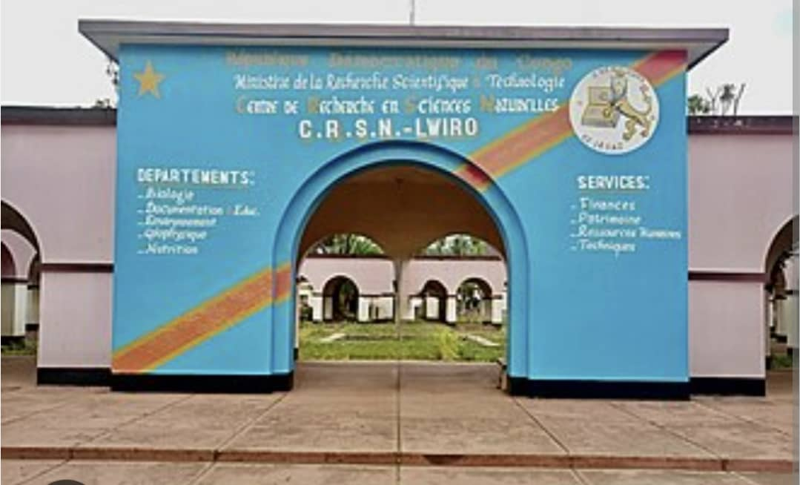
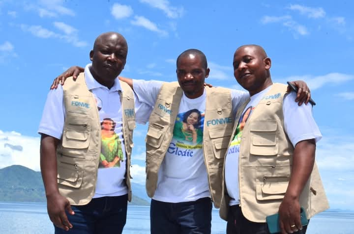
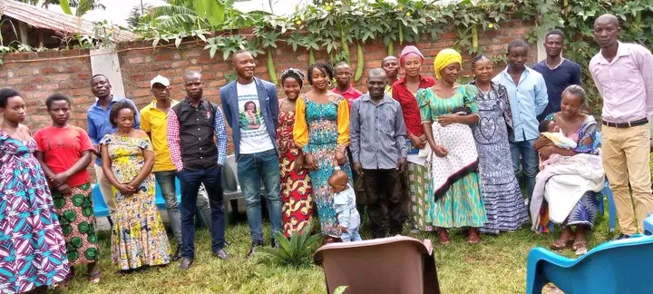
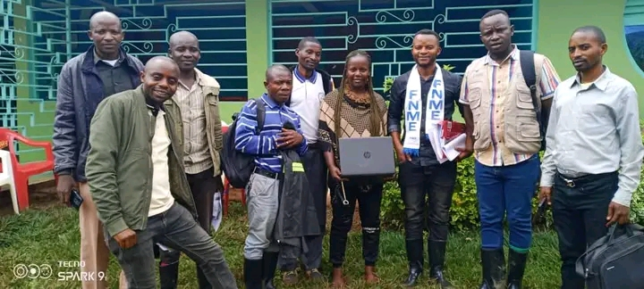

À la Une

L'encouragment et l'assistance aux finalites
La journée motuaire de Katulo Toussain

un climat de guerre a katana

Celebration du merita de La fondatrice

Oeuvres humanitaires

Mission de service de l'équipe Fonme

l'assistance de personnes du 3eme age

Entretien

Une rencontre familiale

l'accompagnement des entrepreneurs

Une formation adequate

Vive la pentecôte